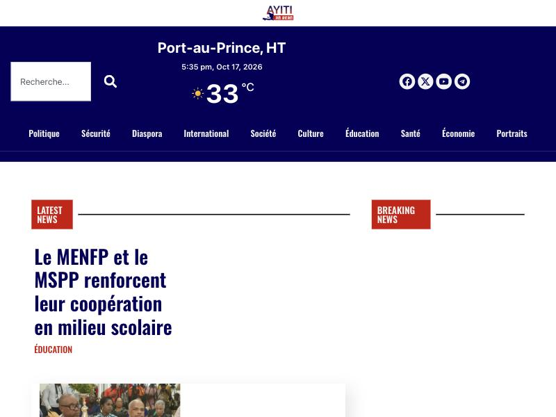
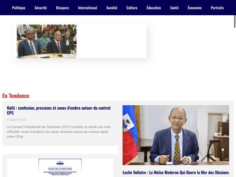
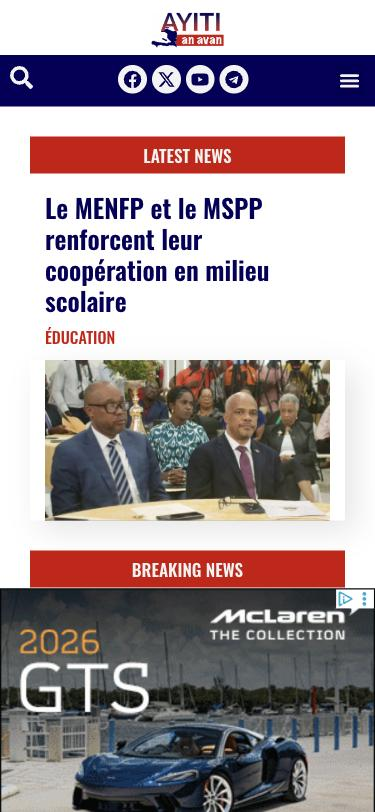
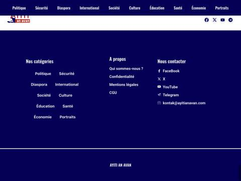

Why ayitianavan.com looks unfinished, and how the redesign fixes it
The site has good, regular reporting. The problem is presentation: the homepage gives no sense of what matters today, the header spends its space on a weather widget, and several blocks are empty or out of date. Readers judge credibility in seconds, and right now the layout works against the journalism.
Open the redesignWhat the site looks like today




Findings
| Priority | Problem | Fix in the redesign |
|---|---|---|
| HIGH | The logo is about 45 px tall and nearly invisible; the weather widget (33 °C, 5:35 pm) is the biggest thing in the header. | Large masthead in the brand's navy and red; weather moved to a small line in the top bar. |
| HIGH | "Breaking News" is an empty box on desktop. "Latest News" shows one headline next to a small photo with a large blank area. | Front page built like a newspaper: live "À la minute" column, a big lead story with related links, and a "Les plus lus" ranking. |
| HIGH | "En Tendance" features stories from March, August and December 2025, so the site looks abandoned. | Trending topics strip and most-read list driven by recent traffic only. |
| HIGH | Mixed languages: "LATEST NEWS", "BREAKING NEWS" and English dates ("2 September 2026") on a French-language site. | All interface text in French with a FR / KREYÒL switch; dates formatted the French way. |
| MEDIUM | Below the fold, 25 stories sit in one undifferentiated two-column grid with no sections. | Section blocks (Sécurité, Économie, Société, Diaspora, Éducation) so readers can scan by topic. |
| MEDIUM | Video is a small YouTube block halfway down. There is no place for live TV or short vertical videos. | "Direct TV" button in the header, live player on the front page, a full TV page with a schedule, and a Shorts rail with a vertical player. |
| MEDIUM | Several thumbnails have headlines baked into the image (TPS, inscription électorale), which looks like social media rather than a newsroom. | Use clean photos for articles; keep text-on-image graphics for Shorts and social posts. |
| MEDIUM | Two typefaces (Oswald and Roboto) plus the system font; condensed Oswald headlines feel loud and cramped. | One serif for headlines and reading (Newsreader) and one sans for labels and navigation (Archivo). |
| LOW | The homepage loads 65 scripts and 57 stylesheets (155 requests). Elementor plus plugins slow it down on Haitian mobile networks. | Build the new theme with fewer plugins; lazy-load images and video. |
| LOW | The newest homepage story is dated 2 September 2026, six weeks ago. | A design can't fix this, but "À la minute" makes regular publishing visible and rewards it. |
What we borrowed from other newsrooms
Juno7 (Haiti)Strong section navigation and a "Les plus lus" ranking in the right column.
Le Nouvelliste (Haiti)Centered masthead, "À la minute" timeline on the left, serif headlines.
The Haitian Times (diaspora)Topic strip under the menu and a calm, white layout with thin rules.
ABC News (US)"Trending" strip of today's topics right under the navigation.
Fox News (US)Red "Watch TV" button always visible and an "On air now" module in the right column.
France 24 / Le Monde (France)"En continu" feed, "Direct TV" in the main menu, replays, and a clean reading page with a drop cap and a summary box.
How to put this on the real site
- Keep WordPress. All your articles, categories and authors stay where they are. Only the theme changes.
- Build a custom theme (or a block theme) from this mockup, replacing the Elementor layouts. The homepage pulls the lead story, "À la minute" and section blocks from your existing categories.
- Live TV: stream through YouTube Live (free, easiest) or a provider such as Mux or Vimeo Livestream, then embed the player where the mockup shows it.
- Shorts: upload vertical videos as a new "Short" post type in WordPress (or pull them from your YouTube Shorts / Instagram Reels feed), and the rail and vertical player display them automatically.
- Language: add Kreyòl with a translation plugin such as Polylang so the FR / KREYÒL switch works.
Estimated effort: about 2–3 weeks for a developer to turn the mockup into a working WordPress theme, plus setup for the live stream.